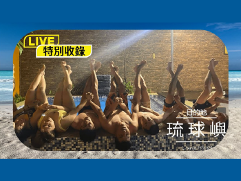
幕後美照.LIUQIU
到底美美的照片是怎麼誕生的呢？
為您獨家揭曉神秘的秘辛...
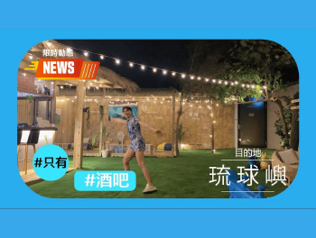
那裡.LIUQIU
住宿的地方門口就是酒吧
不管怎麼樣都要去躺一下...
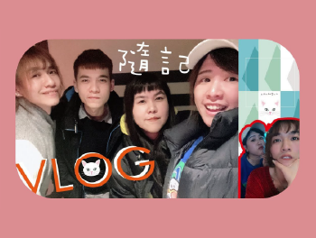
你歌我歌.TO SING
最平凡的日子就是
不知道要幹嘛就是去唱歌...
BAD LADY.BIRTHDAY
我不做自己，誰做我自己
我們是壞女孩，喝酒不開車開車不喝酒...
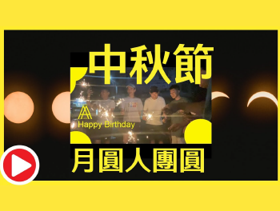
中秋節.August
中秋節月圓
長大後返鄉前也是要團圓一下...
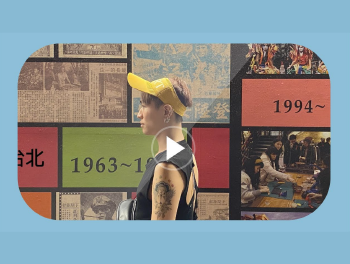
慢活日味.スローライフ
出發前一直想走一種
在都市卻很鄉下的那種感覺...
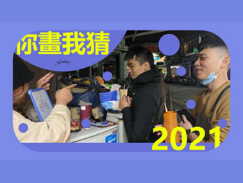
你畫我猜.You draw i guess
到底多不能接受！
正確答案是.我真的不能接受！...
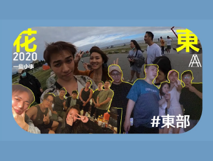
一些小事.Taitung
晚間時刻，酒醉後，
所發生的那些小事。...
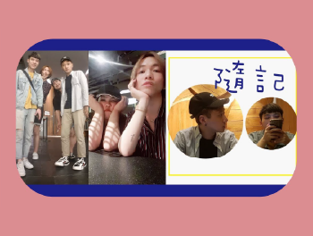
拆禮物.DAILY
隨性的日記，一個開箱照片記本的實錄，
都是身邊所發生的日常之一。...
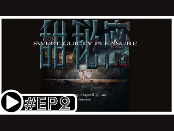
Double Sweet Guilty Pleasure
baby it’s a piece of cake
Responsible Drinking...
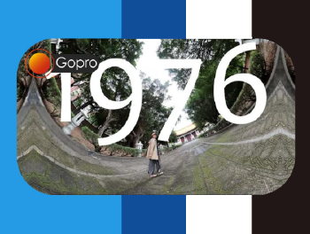
台中孔廟.1976
建築仿效曲阜孔廟格局，於1976年落成
廟宇的彩繪與滴水真的讓畫面震撼很多...
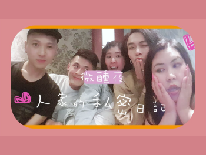
微燻之夜.buzzed
想要少女裝醉
但似乎沒有辦法...